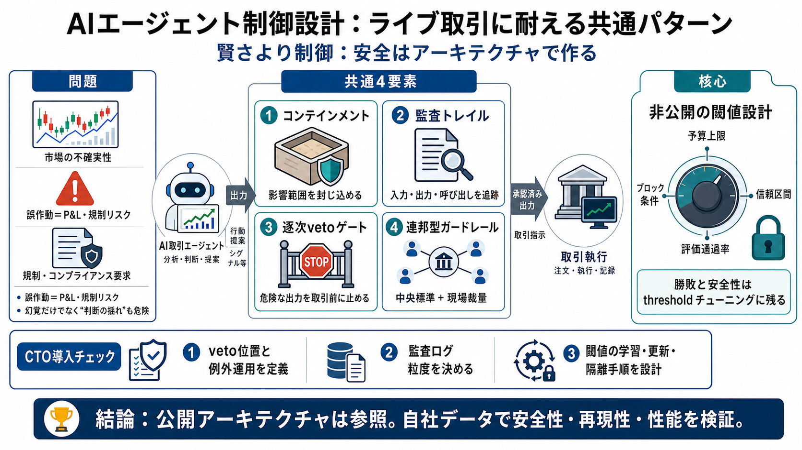

Balyasny Asset Management (BAM)- AI x Investing: Less hype, more alpha. | MIT CSAIL
\* Estimated AUM as of February 1, 2026.Applied AI group at BAM: Our Applied AI team builds and deploys AI systems that …

市場では誤作動がP&Lと規制対応に直結するため、幻覚や誤出力を“起きない前提”にできません。
公開されるのはアーキテクチャ（枠組み）で、重要な閾値（thresholds）は非公開——ここが意味を持つ核心です。
ライブ取引に耐えるAIは、(i)コンテインメント、(ii)監査可能トレース、(iii)逐次veto、(iv)連邦型ガードレールの組み合わせで成立する、と整理されます。
失敗をゼロにするのではなく、被害が広がらないよう“触れられる範囲”を制限するのがコンテインメント層です。
LLM呼び出しを追跡し、モデルが見た情報と出力を関連付けることで、損失時の原因究明と規制対応の基盤になります。
人手レビューは“後から眺める”だけでなく、逐次vetoゲートとして危険な出力を取引前に止めます。
中央がガードレールと評価基準を持ち、現場チームは枠内でローカルにデプロイすることで、勝手な実装と品質ばらつきを抑えます。
Bloombergの競技（Alpha Arena）では、条件が同じでも意思決定が揺れて損失が出た事例が報告され、非決定性（不安定さ）を本番リスクとして位置づけます。
閾値は予算上限、ブロック条件、信頼区間、評価通過確率などの“いつvetoするか/しないか”に相当し、公開情報からは再現しにくいとされています。
CTOとしては、ゲートの位置と運用、監査ログの粒度、連邦ガバナンスの境界に加え、閾値が自社データで“学習・更新される計画”まで必要です。
\* Estimated AUM as of February 1, 2026.Applied AI group at BAM: Our Applied AI team builds and deploys AI systems that …
# Top 5 AI Gateways for Optimizing LLM Cost in 2026. **Comparing the top 5 AI gateways for optimizing LLM cost in 2026:*…
Tasks that took senior analysts 2 days now take 30 minutes [FACT] •Proactive push alerts — agents don’t wait for PMs to …
Their 12-dimension evaluation pipeline — measuring forecasting accuracy, numerical reasoning, and hallucination reductio…
# Building Real-Time AI Cost Controls with agentgateway. Discover how to build a dollar-denominated AI cost-governance l…